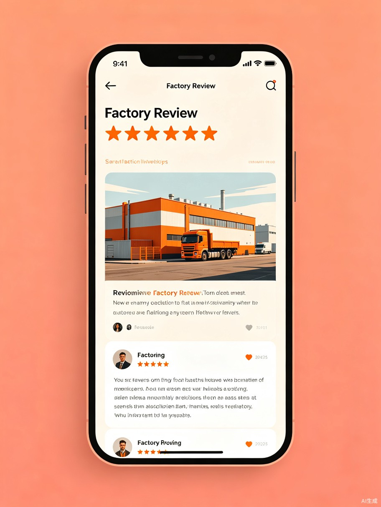

让每个进厂的人，出发前就能看到真实评价。
一款面向近3亿农民工的「工厂版大众点评」。
Contents · 目录
近3亿农民工面临的招聘陷阱与信息困境。
核心用户画像与四大真实使用场景。
移动端优先的H5/小程序产品方案与核心功能。
四大社会价值与长远行业意义。
Section · 01
招工广告写"月薪8000"，进去才发现是每天加班到凌晨才能勉强拿到的数字。
Impact · 一个数字
全国近3亿农民工在进厂打工时，面临严重的信息不对称。工人踩坑后往往因跨省路费和时间成本只能忍着干完，没有一个可信的渠道提前了解工厂真实情况。
Pain Points · 三大痛点
招工广告写"月薪8000"，进去才发现要每天加班到凌晨、全勤无休才能勉强拿到。实际薪资与承诺严重不符。
劳务中介为拿返佣美化岗位信息，工人到了现场才发现宿舍是12人间、流水线两班倒，与描述完全不符。
各种名目罚款扣薪、工资拖欠不发。工人跨省而来，发现被骗后因路费和时间成本进退两难，只能忍着干完。
Section · 02
核心用户是准备进厂打工的蓝领工人，尤其是跨省务工人员。
User & Scenarios · 用户与场景
在多个工厂offer之间做选择，查看真实评价和避坑指数，决定要不要跨省前往。
决策前了解目标工厂的实际工时、薪资结构、管理风格，心中有数不被忽悠。
面试前记录自己的真实体验，上传工资条、宿舍照片，帮助后来者避坑。
在职中对工作过的工厂进行客观评价，为整个工友社区积累真实数据。
离职后Section · 03
一款移动端优先的Web应用，让真实评价成为蓝领工人的出行标配。

Product · 产品方案
一款移动端优先的 Web 应用（H5/小程序），按城市和行业分类展示工厂信息。用户可以对工厂的薪资、作息、工作强度、住宿餐饮、管理态度等维度进行结构化评分和文字评论。
系统通过 AI 自动分析评论生成「避坑指数」和红黑榜，让好工厂被看见，让黑厂无处藏身。
Features · 核心功能
Section · 04
技术不应只服务精英，AI 也能为蓝领群体创造真实的社会价值。
Social Value · 社会价值
降低试错成本，减少跨省求职的风险。让每个工人在出发前就能看清真相，不再被虚假招聘欺骗。
当差评直接影响招工时，工厂才有动力提高待遇、改善环境。市场机制推动行业向善。
平台上积累的真实用工数据，能为劳动监察部门提供参考依据，推动行业规范化。
证明技术不只是精英的玩具。AI 和互联网同样可以为最需要的群体创造真实价值。
Call to Action
「厂探」关注的是近3亿农民工群体的真实需求，这是一个长期被互联网产品忽视的庞大人群。我们相信，信息透明化是改变的第一步。
「厂探」— 工厂避坑指南
让每一个蓝领工人，都不再孤单上路。